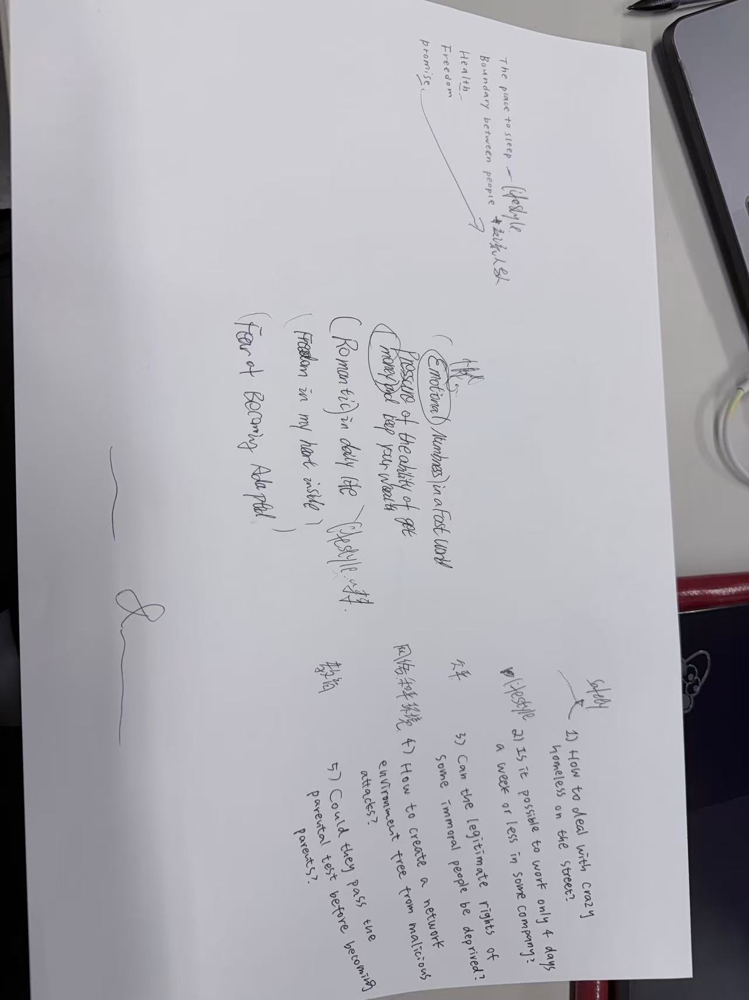

Before there was a manifesto, there were fragments.
Emotional numbness.
Financial pressure.
Fear of becoming adapted.
The struggle to protect freedom inside ordinary life.
We began by naming discomfort, not solutions.
Off Track started from unfinished thoughts, not finished answers.